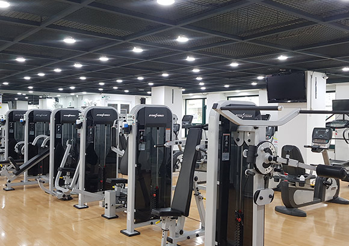
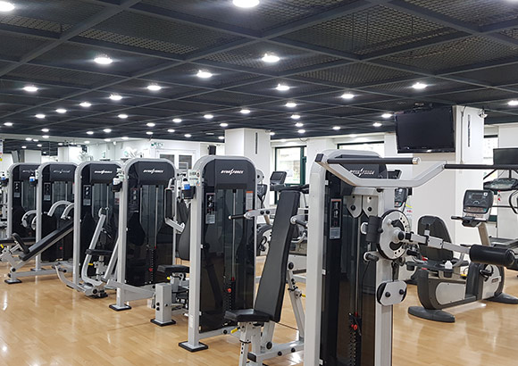

저를 소개해 보겠습니다
제 취미를 그림과 함께 보여드리겠습니다

제 시간표입니다.
| 월 | 화 | 수 | 목 | 금 | |
|---|---|---|---|---|---|
| 8 | 지구동력학 동영상컨텐츠 |
||||
| 9 | |||||
| 10 | 인터넷프로그 래밍 실시간온라인 |
인터넷프로그 래밍 실시간온라인 |
|||
| 11 | 시민사회와자 원봉사 실시간온라인 |
지구동력학 과S22 |
|||
| 12 | 시민사회와자 원봉사 실시간온라인 |
||||
| 1 | 화석의역사 동영상컨텐츠 |
||||
| 2 | 자료구조 실시간온라인 |
자료구조 실시간온라인 |
화석의역사 과642 |
||
| 3 | 해양지질학 과S222 |
||||
| 4 | 해양지질학 동영상컨텐츠 |